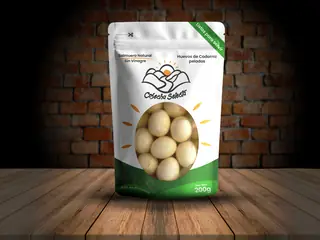
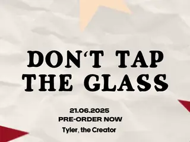

Lo que aprendo mientras produzco: decisiones de montaje, pruebas de impresión, errores que costaron una noche de render y cómo los resolví.
Entradas publicadas

Un pouch que se lee a un metro de distancia
· Branding
La primera etiqueta de Cosecha Selecta tenía seis niveles tipográficos y ninguno mandaba. La rehice con tres: nombre, producto y peso neto. El mockup en Illustrator ayudó a comprobar algo que en pantalla plana no se ve: sobre un pouch curvo, el tercio inferior de la etiqueta desaparece cuando el empaque está de pie en un estante.
Editar pensando en que nadie va a activar el sonido
· Audiovisual
Para las piezas de MacondoLab la retención se caía en el segundo cuatro. Cambié el orden: primero el resultado, después el proceso, y subtítulos quemados desde el primer fotograma. La misma entrevista, montada al revés, sostuvo al espectador el doble de tiempo sin agregar un solo recurso nuevo.

Tres segundos de intro y catorce capas de más
· Motion graphics
Animar el logotipo trazo por trazo se veía bien y pesaba muchísimo. Reemplacé las máscaras animadas por una sola capa de forma con trim paths y dejé el easing en manos del editor gráfico de curvas. El render pasó de once minutos a menos de dos, y la animación quedó más limpia.
En pixel art la silueta manda sobre el detalle
· Ilustración
Estudio personal de pixel art sobre un personaje de Hollow Knight, hecho para entender cómo se sostiene una escena con la paleta cerrada en doce colores y el degradado del fondo resuelto con tramado. La conclusión fue que a este tamaño la silueta hace todo el trabajo: los cuernos y el vacío de las cuencas se leen de inmediato, y casi todo el detalle que dibujé dentro del personaje terminé borrándolo. Ejercicio de estudio, sin uso comercial; el personaje es de Team Cherry.